Neun Jahre nach dem letzten Einsatz in Tokyo ist das Team wieder vereint. Ziel: Seoul. Ausrüstung: Hunger, Durst, eine Switch 2. Bonuslevel: Fukuoka. 21. bis 29. November, Basis in Jongno.
Noch–Mal schlafen
Jetzt in Seoul–Wetter lädt
Zeit+8 hvor Wien
Boarding-Countdown · KE938 · VIE → ICNFr 20.11. · 19:30
Oktober 2017: Purikura in Tokyo, Izakaya in Akihabara, Bowling-Fotobox in Kyoto, Mario und Luigi am Skytree, Regen-Wanderung und Yukata-Abend im Ryokan. Jetzt kommt die Fortsetzung.
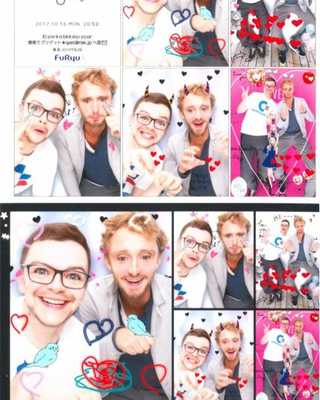
Tokyo · Joypolis16.10.2017
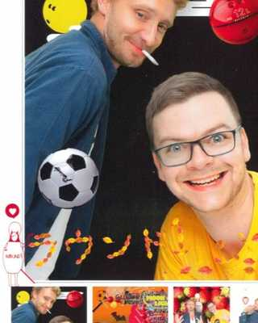
Kyoto · Round118.10.2017
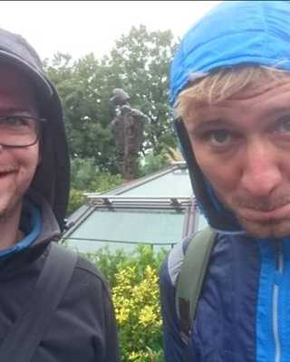
Regen-Wanderung22.10.2017
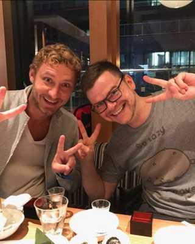
Tokyo · Izakaya in AkihabaraOktober 2017
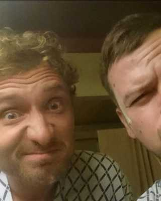
Ryokan-Abend22.10.2017
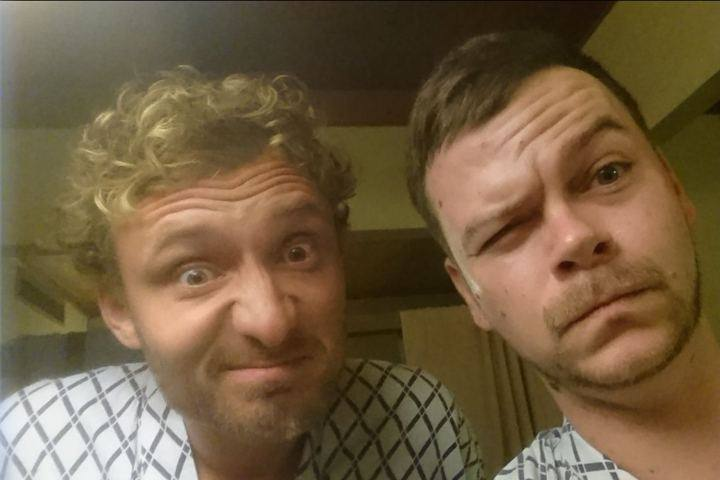
Yukata-Abend im RyokanJapan 2017
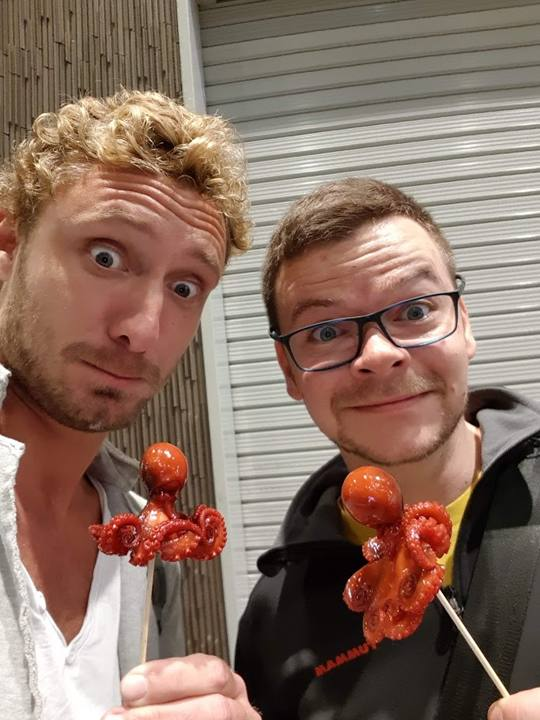
Tintenfisch am SpießJapan 2017
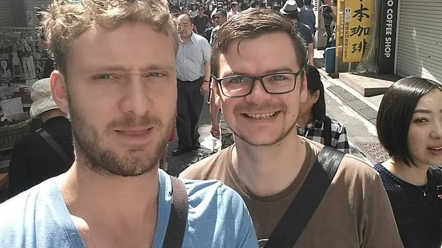
Mittendrin im GewuselJapan 2017
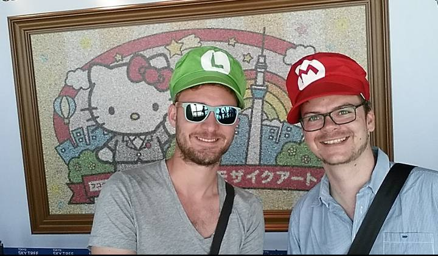
Tokyo Skytree · Mario & LuigiJapan 2017
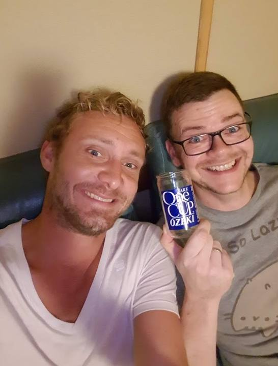
One Cup Ozeki zum FeierabendJapan 2017
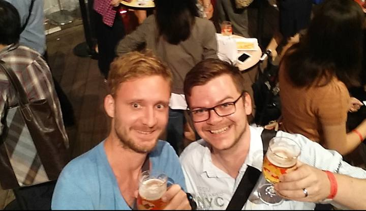
Kanpai!Japan 2017
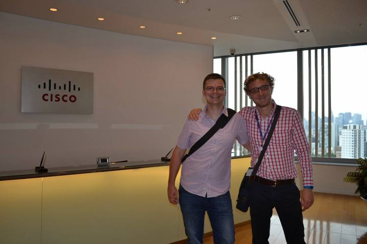
Bei Cisco in TokyoJapan 2017
Mehr Fotos von damals
Weitere Bilder von 2017 hochladen, sie erscheinen hier für uns beide.
01
Flüge & Hotel
여행
Korean Air · direkt · 11 Std.
VIEICN
Fr 20.11. 19:30 → Sa 21.11. 14:30
FlugKE938
Korean Air · direkt · 13 Std.
ICNVIE
So 29.11. 12:05 → 17:10
FlugKE937
Abstecher · Vorschlag, noch nicht gebucht
ICNFUK
Eastar Jet, ca. 326 € für 2 (Schätzung) · Di 24.11. 18:15 → 19:35 · zurück Do 26.11. 11:30 → 12:50. Gepäck vorab prüfen. Alternative Asiana 13:10 / 15:50 für ca. 386 € (Schätzung).
Rückflug ist erst am 29.11., also 21. bis 29. November, 8 Nächte. Gesucht: Twin-Zimmer, richtiges Bad, ruhige Lage, wenige Minuten zur U-Bahn, zwischen Jongno und Euljiro. Hier lohnt es sich, etwas mehr auszugeben. Mit Fukuoka: 6 Nächte Seoul plus 2 dort, oder das Seoul-Hotel durchlaufen lassen und nur eine kleine Tasche mitnehmen.
Hotel-Empfehlungen · alle in Gehweite zu Jongno & Euljiro
H1
Orakai Insadong Suites
Apartments mit 2 Schlafzimmern, Küche, Waschmaschine, Pool und Gym. Jeder hat sein eigenes Zimmer. Mitten in Insadong.
„Double“ ist in Korea fast immer ein einziges Bett, also gezielt Twin buchen. Auf Fotos prüfen, ob das Bad nur eine Glaswand hat. Nahe an einem U-Bahn-Ausgang wohnen spart viel Lauferei. Für den Abreisetag um späten Check-out bitten oder Gepäck an der Rezeption lassen.
Preise sind Richtwerte für Ende November, live in Booking vergleichen. Bei H1 und H2 nach „2 Schlafzimmer“ filtern, bei H3 und H4 nach „Twin“. Standorte auf der Karte unter „Karten“.
02
Wetter
날씨
–
Aktuelle Werte laden
Live-Daten kommen über AccuWeather, sobald du die Verbindung erlaubst.
Nächste 10 Tage · pink = Reisetage
–lädt
Typisch Ende November9° / 1°
Tag und Nacht im Mittel. Klar und trocken, oft windig.
Kälte
Ab etwa dem 22. November kann es so kalt werden, dass erster Schnee fällt. Morgens und abends knapp über null.
Luft
Feinstaub kommt öfter vor. An schlechten Tagen eine KF94-Maske aus dem Convenience Store.
Ein Highlight pro Tag, dazu gutes Essen und eine Bar. Nachmittags zurück ins Hotel, Füße hoch. Alles über 20 Minuten mit dem Taxi, das ist hier billig. Was nicht passt, lassen wir weg.
04
Logbuch
기록
▶ FLASHBACK · JAPAN 2017Mittendrin im Gewusel. Seoul wird nicht leerer, wir auch nicht ruhiger.
Kurze Reiseberichte im Voraus: so fühlen sich die wichtigsten Stationen an.
LOG 01 · Euljiro · Sa 21.11.
Ankommen im Neon
Elf Stunden Flug, eine Stunde Taxi, dann die erste Gasse in Euljiro: Metallhocker auf dem Gehsteig, der Grill zischt, jemand schenkt Soju ein, ohne zu fragen. Zurück im Hotel läuft Orbitals, länger als bis zehn hält keiner durch.
ca. 19:00LOG 02 · Gyeongbokgung · Mo 23.11.
Palast im kalten Licht
Klare Novemberluft, die Dächer gegen den Bugaksan, um 10 Uhr ziehen die Wachen in Rot und Blau auf. Danach Gwangjang Market: Bindaetteok frisch aus dem Öl, Yukhoe mit Birne, Plastikschürzen und Dampf überall.
VormittagLOG 03 · Nogari-Gasse · Mo 23.11.
Bier aus Plastikbechern
In der Nogari-Gasse sitzt halb Seoul nach Feierabend draußen, Heizstrahler an, getrockneter Pollack mit Mayo und Chili. Zwei Treppen höher eine Plattenbar, in der der Barkeeper die Musik nach unseren Gesichtern auswählt.
AbendLOG 04 · Fukuoka · Di–Mi
Ramen um Mitternacht
Landung mitten in der Stadt, eine halbe Stunde später steht die erste Schüssel Tonkotsu auf dem Tresen. Am nächsten Abend Yatai am Fluss: acht Plätze, ein Koch, Oden aus dem Topf, der Nachbar erklärt uns die Karte auf Englisch und Japanisch gleichzeitig.
24.–25.11.LOG 05 · Hakata · Mi 25.11.
Nintendo zum Anfassen
Achter Stock über dem Bahnhof: Mario in Lebensgröße, Anspiel-Stationen, Fukuoka-Editionen, die es sonst nirgends gibt. Gleich nebenan in der Hakata Marui das Pokémon Center, der Einkaufszettel für Martin wird schnell abgehakt.
MittagLOG 06 · Seoul Station · Do 26.11.
Kunst im alten Bahnhof
Unfold X am Eröffnungstag: Medienkunst in der Kuppelhalle des alten Bahnhofs von 1925, Licht und Sound, wo früher Züge abgefertigt wurden. Danach Füße hoch, abends Cocktails in Hannam.
NachmittagLOG 07 · Jamsil · Fr 27.11.
123 Stockwerke über der Stadt
Bus von der DMZ zurück, durchatmen, dann rauf auf den Lotte World Tower, wenn die Sonne untergeht und Seoul Stück für Stück anknipst. Hanwoo im Turm, danach Kino im Superplex. Alles im selben Gebäude.
AbendLOG 08 · Suwon · Sa 28.11.
Technik von Edison bis heute
Im Samsung Innovation Museum stehen Röhrenradios neben faltbaren Displays, ein Rundgang durch hundert Jahre Elektronik. Mittags Suwon-Galbi, groß wie ein Teller, und ein kurzer Blick auf die Festungsmauer.
Tag
05
Unsere Fotos
사진
Fotos hochladen
Fotos werden verkleinert, nach Reisetag sortiert und sind für uns beide sichtbar.
Noch keine Fotos. Das erste kommt am 21.11.
06
Was los ist
행사
Unfold X · Medienkunst und Technik im alten Bahnhofsgebäude Culture Station Seoul 28426.11.–9.12.
Seoul Independent Film Festival · Indie-Kino rund um CGV Apgujeong25.11.–4.12.
Seoul Autumn Festa · Theater und Performances in der ganzen Stadt, Infostand in Daehak-robis 29.11.
Hanseong-Baekje-Museum · Sonderschau zu den Drei Reichen, Olympic Park, Eintritt freiab 20.11.
Fukuoka · Weihnachtsmärkte in Hakata und Tenjin, Lichter in Nakasu und an der Watanabe-doriläuft 24.–26.11.
Kimjang Festival · Kimchi-Festival in Yangjae, 2025 am 22.11.; Termin 2026 noch offenprüfen
Die großen Lichterfeste in Seoul (Lantern Festival, Gwanghwamun) starten erst im Dezember. Herbstlaub ist Ende November meist schon am Ausklingen, in Fukuoka noch eher zu sehen.
07
Essen
음식
고기 · Grillen am TischFoto: Edward Lawrence / Unsplash▶ FLASHBACK · JAPAN 2017Tintenfisch am Spieß, mit Wachtelei im Kopf. Diesmal wird am Tisch gegrillt.
Samgyeopsal in EuljiroBBQ
Bindaetteok & YukhoeGwangjang Market
Fisch wählen, oben zubereiten lassenNoryangjin
Nogari & BierEuljiro-Gasse
Suwon-GalbiSuwon
Chimaek: Fried Chicken & Bierüberall
Hanwoo, das Premium-Rindein Abend
Seolleongtang oder Gamjatang zum Frühstückalte Suppenküchen
Pyongyang-Naengmyeonkalte Nudeln, Kult
Koreanisches Fine Diningjetzt reservieren
Hotteok, TteokbokkiStreetfood
08
Kino & Bars
밤
▶ FLASHBACK · JAPAN 2017One Cup Ozeki aus dem Konbini, getrunken auf dem Hotelsofa. Diesmal eine Stufe höher.
CGV Yongsan I'Park Mallriesige IMAX
Lotte Cinema World TowerSuperplex
Megabox COEXDolby Cinema
Englisch im Kino: Hollywood-Filme laufen in Korea im Original mit koreanischen Untertiteln, also einfach auf Englischüberall
Koreanische Filme mit englischen Untertiteln gibt es nur vereinzelt. In der CGV-App nach „영어자막“ suchenCGV
Fukuoka: die Fassung mit 字幕 wählen, das ist Original mit Untertiteln. 吹替 heißt synchronisiertJapan
Tickets am Automaten oder in der App, Sitzplatz wird beim Kauf gewähltTipp
Versteckte Bars in alten DruckereienEuljiro
Hanok-Bars mit InnenhofIkseon-dong
Cocktailbars der Asia-Top-ListeHannam / Gwanghwamun
술집 · ein Glas nochFoto: INHYEOK PARK / Unsplash▶ FLASHBACK · JAPAN 2017Kanpai, Teil eins. Teil zwei läuft in Euljiro, bei Nogari und frisch gezapftem Bier.
Seoul
Euljiro Brewing · Craft Beer unter Neonlicht, Bestellen per Tablet, bis 2 UhrEuljiro 3-ga
7.8 Makgeolli · große Auswahl, teils selbst gebraut, Tastings zu festen Zeiten, Hinterhof-VibeEuljiro 4-ga
Haengbokhan Jip · Jeon und Makgeolli wie bei Oma, nur Koreanisch, mit Fotos bestellenJongno 3-ga
Fukuoka
Nihonshu Gakkō · Sake-„Schule“ mit Flatrate ab ca. 3.000 ¥ (Schätzung). Vorher App laden und Quiz lösen, kein WitzDaimyo · Mo zu
go. · kleine Sake-Bar mit Küche aus Yamaguchi, sehr herzliche GastgeberinNishinakasu · So zu
Perfect Beer Stand · zwei Zapfhähne, verschiedene Zapftechniken, man kommt schnell ins GesprächDaimyo
Fukuoka Craft · Craft-Beer-Bar mit Probierbrett aus 6 BierenDaimyo
Bestell-Tipp: Soju und Makgeolli kommen in der Flasche für den Tisch. In Japan hilft „Osusume wa?“ (Was empfehlen Sie?).
10
Lokal trinken & essen
맛
Was es nur dort gibt oder dort am besten schmeckt. Zum Durchprobieren, ein Punkt pro Abend reicht.
서울 SeoulKorea
Bier
Cass, Terra, KellyLeichte Lager, kommen zu jedem BBQ. Am Tisch fast immer im Mix mit Soju
SomaekSoju plus Bier im Glas, der koreanische Kneipen-KlassikerMuss
Craft aus SeoulMagpie, Amazing Brewing, Kabrew. In Euljiro Brewing und Kiwa vom HahnCraft
Soju & Makgeolli
Chamisul oder JinroDie grüne Flasche, 16–17 %. Für den Tisch, nie für einen allein
HwayoPremium-Soju, destilliert, schmeckt fast wie Wodka mit ReisnoteTipp
Jangsu MakgeolliSeouls Alltags-Reiswein, trüb, leicht prickelnd, zu Jeon an RegentagenMuss
BoksoondogaPrickelnder Makgeolli wie Champagner, gut zum Mitbringen
Ohne Alkohol
BananenmilchBinggrae aus dem Convenience Store, Kult seit den 70ern
SikhyeSüßer Reistrunk, gibt es kalt im Jjimjilbang
Yuja-chaHeißer Zitrustee mit Honig, ideal bei Novemberkälte
Essen, das man probieren muss
BungeoppangFisch-Waffel mit roter Bohnenpaste, nur im Winter an StraßenständenSaison
Gun-gogumaGeröstete Süßkartoffel aus der Tonne am StraßenrandSaison
Kimchi-jjigaeKimchi-Eintopf mit Schwein und Tofu, wärmt von innen
DakgalbiScharfes Huhn mit Reiskuchen in der großen Pfanne, am Ende Reis dazu
HotteokPfannkuchen mit Zucker-Zimt-Füllung, heiß, also vorsichtig
福岡 FukuokaJapan
Bier
Asahi, Kirin, SapporoFrisch gezapft in jedem Izakaya. Kirin braut sogar in der Region Fukuoka
HighballWhisky-Soda, meist Kaku, das Getränk der YataiMuss
Lemon SourShochu mit Zitrone und Soda, spritzig und gefährlich leicht
Shochu & Sake
Imo-ShochuAus Süßkartoffel, Kyushu ist Shochu-Land. Pur, auf Eis oder mit heißem WasserTipp
Mugi-ShochuAus Gerste, milder, guter Einstieg
Niwa no UguisuSake aus Kurume in der Präfektur Fukuoka, fruchtig und weichLokal
Ohne Alkohol
Yame-TeeGrüntee aus der Region, auch als Matcha-Latte
CalpisJoghurt-Limo aus dem Automaten, jeder Japaner kennt sie
Essen, das man probieren muss
Hakata-RamenDünne Nudeln, milchige Schweinebrühe, Härtegrad selbst wählenMuss
MizutakiHühner-Eintopf in klarer, kräftiger Brühe, Fukuoka-SpezialitätTipp
Hitokuchi-GyozaMini-Gyoza in einem Bissen, kommen gleich zu zwanzig
Goma-SabaRohe Makrele mit Sesamsauce, nur hier so frischLokal
Butabara-YakitoriSchweinebauch-Spieß auf Kraut, typisch für Hakata
11
Shopping
쇼핑
MUJI und UNIQLO in beiden Städten, dazu Mitbringsel, die man zu Hause nicht bekommt.
Seoul
MUJI YeongPoong Jongno · zwei Etagen, auch Snacks und Fertiggerichte, SelbstkasseJonggak
MUJI Seoul Station · im Lotte Mart, Tax-free möglichmittwochs zu
UNIQLO Myeongdong · drei Etagen, Shirts mit lokalen KollaborationenMyeongdong
Olive Young Myeongdong · Flagship für Skincare, Masken, RasierzeugMyeongdong
Ssamziegil · Spiralbau voller kleiner Läden für Handwerk und MitbringselInsadong
Fukuoka
MUJI Canal City Hakata · zwei Etagen, großes Food-Regal, sehr guter Espresso im CaféNakasu
UNIQLO Tenjin · groß, mit Änderungsschneiderei und UT-Druckstudio für eigene ShirtsTenjin
Japan-Preise · MUJI und UNIQLO sind in Japan meist günstiger als in Korea oder ÖsterreichTipp
Mitbringsel Korea
Ginseng-Tee und Yuja-Tee, Hanji-Papier und Keramik aus Insadong, Gesichtsmasken von Olive Young, Soju in Sonderedition, Honey-Butter-Chips.
Mitbringsel Japan
Mentaiko-Snacks aus Hakata, Fukuoka-Edition bei Nintendo, Kit Kat in Japan-Sorten, UNIQLO-UT-Shirts, Gashapon aus der Canal City.
Tax-free in Japan · neu ab 1.11.2026
Man zahlt im Laden den vollen Preis, die Steuer gibt es beim Abflug am Flughafen zurück. Ab 5.000 ¥ pro Laden und Tag. Pass, alle Belege und die Waren selbst dabeihaben, alles ins Handgepäck, und vor dem Einchecken des Gepäcks am Terminal den Pass scannen. In Fukuoka geht das teils vorab über Visit Japan Web.
Leicht hin, voll zurück
Mit kleinem Gepäck fliegen und vor Ort einkaufen. Der Yen ist gerade günstig, UNIQLO und MUJI in Fukuoka lohnen sich besonders. Gegen die Kälte gleich HEATTECH bei UNIQLO holen.
Faltbare Reisetasche einpacken oder bei MUJI bzw. Daiso kaufenPlatz
Beim Rückflug Fukuoka → Seoul mit Eastar Jet Aufgabegepäck dazubuchen, sonst wird es am Schalter teuerwichtig
Freigepäck für den Korean-Air-Rückflug auf dem Ticket prüfenKE937
Tax-free-Einkäufe aus Japan bis zum Pass-Scan am Flughafen Fukuoka griffbereit lassenTax-free
Tax-free in Korea
Viele Läden ziehen die Steuer direkt an der Kasse ab, sonst Formular mitnehmen und am Flughafen Incheon erstatten lassen. Pass immer dabei.
Kakao Friends Store · Koreas Lieblings-Figuren als Plüsch und KrimskramsSeoul
Artbox · süße Schreibwaren und Sticker, Kinder lieben esMyeongdong / Insadong
Gashapon in der Canal City · rund 1.700 Automaten, ideal für kleine GeschenkeFukuoka
Tipp: Für Felix (3) auf Kleinteile achten. Viele Gashapon-Figuren sind erst ab 6 Jahren.
13
Wenn's regnet
비
비 오는 밤 · Plan BFoto: Red Shuheart / Unsplash▶ FLASHBACK · JAPAN 2017Damals Cisco Tokyo mit Blick über die Stadt. Diesmal Technik bei Samsung und im Robot & AI Museum.
Plan B für kalte oder nasse Tage. Alles drinnen, vieles über unterirdische Gänge erreichbar.
Seoul
COEX · Starfield Library, Aquarium, Kino, alles unter einem DachGangnam
Jjimjilbang · Sauna, Bäder, Liegehallen, Eier und SikhyeSeoul Station
Lotte World Tower · Mall, Aussicht, Kino und Restaurants im TurmJamsil
DDP & Dongdaemun · Architektur, Ausstellungen, Shopping bis spätDDP
Unterirdische Passagen · Euljiro und City Hall sind unter der Erde verbundenEuljiro
PC-Bang oder Brettspiel-Café · ein paar Stunden zocken, Ramyeon dazuüberall
Fukuoka
Canal City Hakata · Shopping, MUJI, Gundam, Kino, alles überdachtNakasu
Tenjin Chikagai · lange unterirdische EinkaufsstraßeTenjin
Bahnhof Hakata · Nintendo, Pokémon Center, Food-EtagenHakata
Fukuoka Asian Art Museum · moderne Kunst aus Asien, im Riverain-GebäudeNakasu
14
Fukuoka
福岡
屋台 · Yatai am FlussFoto: Tracy Xu / Unsplash▶ FLASHBACK · JAPAN 2017Yukata, Tatami, Grimassen. Zwei Nächte Japan reichen für eine Wiederholung.
Zwei Nächte Japan, 24. bis 26. November. Die Stadt ist klein und flach, fast alles geht zu Fuß. Der Flughafen liegt mitten in der Stadt.
–
Wetter in Fukuoka
Live-Werte laden
Typisch Ende November15° / 7°
Deutlich milder als Seoul. Tagsüber reicht oft eine leichte Jacke.
Anziehen
Zwiebellook: Abends am Fluss bei den Yatai wird es frisch und windig. Schal einpacken.
Regen
Schirme gibt es in jedem Konbini für wenig Geld. Kein eigener nötig.
Anreise vom Flughafen
Taxi: vom internationalen Terminal 15–20 Min. nach Hakata oder Nakasu, am bequemsten. Günstig: Gratis-Shuttlebus zum Inlandsterminal, dort U-Bahn, 5 Min. bis Hakata. Direktbus zum Bahnhof Hakata gibt es auch.
Unterwegs
Eine U-Bahn-Linie verbindet Flughafen, Hakata, Nakasu-Kawabata und Tenjin in wenigen Minuten. IC-Karte (Hayakaken oder Suica) am Automaten kaufen. Nakasu bis Tenjin sind 15 Min. zu Fuß, flach.
Nintendo & Co.
Nintendo FUKUOKA (Amu Plaza 8F) und Pokémon Center (Hakata Marui 2F) liegen beide direkt am Bahnhof Hakata. Bei Andrang gibt es Zeitslot-Tickets. Dazu Surugaya für Retro-Games im selben Haus wie das Pokémon Center.
Viertel
Nakasu: Insel im Fluss, Yatai und Lichter. Tenjin & Daimyo: Shopping, kleine Bars. Hakata: Bahnhof mit Nintendo und Pokémon Center.
Hotel-Empfehlungen Fukuoka
F1
Hotel Il Palazzo
Designhotel am Fluss, Yatai in 3 Minuten. Große Zimmer für Japan, runde Badewanne, sehr gutes Frühstück.
Zimmer sind klein: auf die Quadratmeter achten, ab etwa 22 m² wird es zu zweit angenehm. Manche Hotels haben noch Raucherzimmer, also Nichtraucher wählen. Viele Hotels haben ein Badehaus, perfekt nach einem langen Tag. Gepäck kann man an der Rezeption abgeben, auch vor dem Check-in.
Essen in Fukuoka
Hakata-Ramen · Shin Shin in Tenjin, Tonkotsu-Brühe, Kaedama bestellenmittwochs zu
Motsunabe · Innereien-Eintopf, Spezialität der Stadt. Maedaya oder Rakutenchiüber das Hotel reservieren
Mentaiko · scharfer Fischrogen, zum Frühstück bei Ganso Hakata Mentaijuab 7 Uhr
Yatai · Straßenstände in Nakasu, Oden, Yakitori, Highballab 18 Uhr
15
Karten
지도
WohnenEssenBarsSehen & GamesShopping
U-Bahn · die Linien, die ihr braucht
Schematische Karten in der Vorschau, echte Karten auf der Website. Ein Tipp auf einen Eintrag öffnet ihn in Google Maps.
// THERE IS NO SPOON. ES GIBT STÄBCHEN.
16
Games
게임
게임 · Level upFoto: Carl Raw / Unsplash▶ FLASHBACK · JAPAN 2017Mario und Luigi am Tokyo Skytree. Fortsetzung im Nintendo-Store am Bahnhof Hakata.
Seoul ist die Hauptstadt des E-Sports, Fukuoka hat Nintendo direkt am Bahnhof.
Hakata mit Bahnhof, Nintendo und Pokémon Center. Tenjin und Daimyo zum Shoppen und für kleine Bars.
Bei Ramen „Kaedama“ für Nachschlag-Nudeln
Bei Regen durch den Tenjin Chikagai
Mentaiko-Frühstück ab 7 Uhr
18
Lokaltipps
꿀팁
Seochon statt Bukchon
Westlich vom Gyeongbokgung, ruhiger, mehr Einheimische. Im Tongin-Markt kauft man Messing-Münzen und stellt sich sein Mittagessen an den Ständen zusammen.
Bars hinter Türen
In Euljiro sind die besten Bars oft nicht beschildert: zweiter Stock, alte Druckerei, unscheinbares Treppenhaus. Instagram hilft beim Finden.
Convenience Store
GS25 und CU haben fast alles. Ramyeon an der Kochstation, dazu Bananenmilch. Perfekt für den Hunger um Mitternacht.
Nachtspaziergang
Am Cheonggyecheon entlang, dann rauf zur Stadtmauer im Naksan-Park. Flach am Bach, kurzer Anstieg, Blick über die Lichter.
Bestellen & Zahlen
Viele Lokale haben Tablets am Tisch oder einen Klingelknopf. Wasser ist gratis, Beilagen werden nachgefüllt. Bezahlt wird vorne an der Kasse.
Soju-Regeln
Nie selbst einschenken, immer dem anderen. Beim Anstoßen mit Älteren das Glas etwas tiefer halten.
Yatai-Etikette
Die Straßenstände in Fukuoka sind winzig. Jeder bestellt ein Getränk und ein Gericht, nach etwa einer Stunde macht man Platz.
Yanagibashi-Markt
Die „Küche von Hakata“: kleiner Markt für frischen Fisch, morgens am besten, ideal fürs Frühstück.
19
Was kostet's
가격
Kosten-Schätzung · 2 Personen · ohne Flüge
Posten
Gesamt
Für uns beide–
Pro Person–
Grobe Schätzung für 8 Nächte (6 Seoul, 2 Fukuoka). Nicht drin: Langstreckenflug, Fukuoka-Flüge (ca. 326 € für 2, Schätzung) und Shopping.
Sehen & Erleben
Was
Preis
≈ €
Essen & Trinken
Was
Preis
≈ €
Unterwegs
Was
Preis
≈ €
Mit „Schätzung“ markierte Preise sind Erfahrungswerte, nicht geprüft. Euro-Werte rechnen mit dem Tageskurs der EZB, live geladen. Stand der Preise: Oktober 2026, vor Ort kann es abweichen.
Häkchen bleiben auf dem jeweiligen Handy gespeichert.
Korea · so läuft's
Mülleimer sind selten. Müll mitnehmen.🗑
Pinke Sitze in der U-Bahn frei lassen, leise sein.지하철
U-Bahn fährt bis ca. Mitternacht, danach Taxi mit Nachtzuschlag.택시
Beim Taxi die Adresse auf Koreanisch zeigen.주소
Bodensitz oder Hanok: Schuhe aus. Gute Socken einpacken.신발
Reisepass immer dabei: Tax Refund und DMZ.여권
Apotheke heißt 약국 (yakguk).약국
Japan · anders als Korea
Strom 100 V, Stecker Typ A: Adapter nötig.⚡
Bargeld in Yen wichtiger als in Korea. Am 7-Eleven-Automaten abheben.円
Gleiche Uhrzeit wie Seoul.KST = JST
Nicht im Gehen essen, kein Trinkgeld.マナー
Rolltreppe in Fukuoka: links stehen.←
21
Packliste
짐
Gepackt 0 von 0
Papiere
Technik
Kleidung · Seoul 0–10 °C, Fukuoka bis 15 °C
Kulturbeutel & Kleinkram
Häkchen bleiben auf dem jeweiligen Handy gespeichert.
// ERROR 404: JETLAG NOT FOUND
22
Praktisch
정보
Umrechner · Tageskurs
1 € = … ₩1 € = … ¥
Kurs wird geladen …
–
Eigenen Kurs eintragen (z. B. vom Wechselschalter)
Vom FlughafenAREX
Express zur Seoul Station, rund 45 Minuten. Dort weiter mit Linie 1 oder 4.
UnterwegsT-money-Karte
Im Convenience Store kaufen und bar aufladen. Gilt für U-Bahn, Bus und viele Taxis.
AppsNaver Map, KakaoMap
Für Wege in Korea Naver Map oder KakaoMap, Google Maps kennt dort kaum Fußwege. Die Links auf dieser Seite öffnen Google Maps zum Nachschlagen. Dazu Kakao T fürs Taxi und Papago zum Übersetzen.
Einreise KoreaKein K-ETA nötig
Österreicher sind bis 31.12.2026 befreit. Reisepass reicht.
Einreise JapanVisit Japan Web
Kein Visum nötig. Vorab online ausfüllen, dann geht's am Flughafen per QR-Code schneller.
ÖffnungszeitenMuseen meist Mo zu
RAIM, Leeum und viele Museen sind montags geschlossen (RAIM: Di–So 9:30–17:30 Uhr). Gyeongbokgung hat Mo offen, Di zu.
StromTyp F, 220 V
Gleicher Stecker wie in Österreich. Kein Adapter nötig.
GeldKarte geht fast überall
Etwas Bargeld für Märkte und Streetfood. Trinkgeld ist nicht üblich.
Vor der ReiseMedikamente
Korea und Japan haben strenge Regeln für manche Medikamente, etwa starke Schmerzmittel. Vorher mit dem Arzt klären, Attest auf Englisch, alles ins Handgepäck.
AbsichernVersicherung
Reiseversicherung kurz prüfen, ob sie alles abdeckt.
Notruf112 · 119
Polizei 112, Rettung und Feuerwehr 119, Touristen-Hotline 1330 (auch auf Englisch).